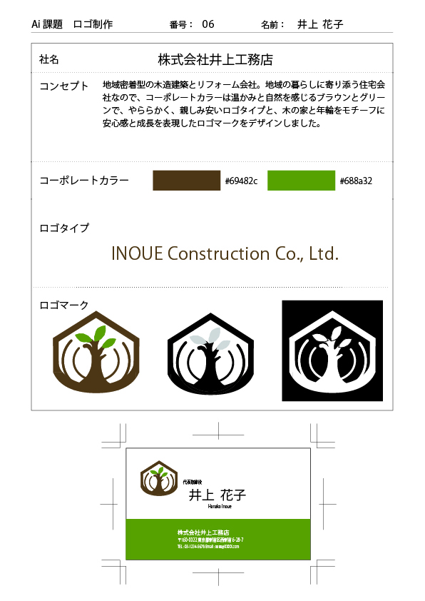
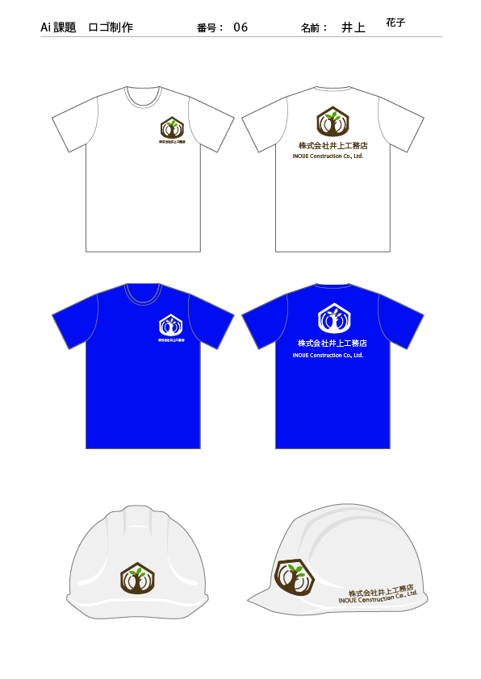

Logo Design
建設会社ロゴ
自然素材や地域とのつながりを大切にする建設会社を想定したロゴデザインです。
木と家のモチーフを組み合わせ、安心感や温かみを感じられるデザインを目指しました。
概要
自然素材や地域とのつながりを大切にする建設会社を想定したロゴデザインです。 木と家のモチーフを組み合わせ、安心感や温かみを感じられるデザインを目指しました。
制作意図
住宅や暮らしに寄り添う企業イメージを表現するため、ナチュラルで落ち着きのある配色を採用しました。 自然との調和や長く愛される企業イメージを意識して制作しています。
工夫した点
- 家のシルエットと樹木を組み合わせ、建設業と自然を表現しました。
- ブラウンとグリーンを使用し、温かみと安心感を演出しています。
- 名刺やユニフォーム展開時の視認性を意識し、ロゴの形状を整理しました。
- 親しみやすさと企業ロゴらしい安定感の両立を目指しました。
制作範囲
Logo Design
使用ツール
Illustrator
制作資料・展開例

